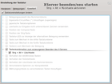

XServer
Zum Verständnis dieses Artikels sind folgende Seiten hilfreich:
 Der X-Server ist der nutzerseitige Teil des X Window Systems. Das X Window System (auch: X Version 11, X11 oder einfach X; aber nicht: X-Windows) ist eine Sammlung von Protokollstandards und Computerprogrammen zum Erzeugen einer grafischen Benutzeroberfläche. Der X-Server steuert die Ein- und Ausgabegeräte, wie Maus, Tastatur und Bildschirm. Die Anwendungsprogramme stellen X-Clients dar. Diese können auch auf entfernten Rechnern ablaufen, mit denen der X-Server nur über ein Netzwerk verbunden ist. X herrscht auf Unix-Systemen vor, aber auch für andere Betriebssysteme sind X-Server verfügbar.
Der X-Server ist der nutzerseitige Teil des X Window Systems. Das X Window System (auch: X Version 11, X11 oder einfach X; aber nicht: X-Windows) ist eine Sammlung von Protokollstandards und Computerprogrammen zum Erzeugen einer grafischen Benutzeroberfläche. Der X-Server steuert die Ein- und Ausgabegeräte, wie Maus, Tastatur und Bildschirm. Die Anwendungsprogramme stellen X-Clients dar. Diese können auch auf entfernten Rechnern ablaufen, mit denen der X-Server nur über ein Netzwerk verbunden ist. X herrscht auf Unix-Systemen vor, aber auch für andere Betriebssysteme sind X-Server verfügbar.
Das Aussehen und Verhalten des Fenstersystems wird nicht von X bestimmt, sondern vom Fenstermanager. Dieser ist eine normale Client-Anwendung des X-Servers. Für das Aussehen der Anwendungsprogramme sind diese selbst verantwortlich. Häufig nutzen sie dafür Programmbibliotheken (GUI-Toolkits). Diese zeichnen und verwalten die Elemente der grafischen Oberfläche, wie Menüs und Schaltflächen.
Der X-Server wird laufend weiter entwickelt. Die ursprünglich zentrale Konfigurationsdatei /etc/X11/xorg.conf wurde dabei fast bedeutungslos. Gängige Bildschirme, Grafikkarten und Eingabegeräte werden nun automatisch ermittelt; Plug & Play ist möglich.
Manuell kann bei Bedarf oder für spezielle Geräte, z.B. Grafiktabletts, die Konfiguration ergänzt oder geändert werden. Einige Wege dafür sind:
Aus dem Menü der Benutzeroberfläche X grafisch einrichten
Im Terminal mit dem Befehl xrandr das Programm RandR aufrufen
Direkte Änderung der Datei /etc/X11/xorg.conf (siehe unten)
Unterschiede zwischen Ubuntu-Versionen¶
In diesem Abschnitt werden die Unterschiede zwischen den Ubuntu-Versionen dargestellt.
Ab Ubuntu 10.04¶
Ergänzend zur festen Konfigurationsdatei wurde die Konfiguration von Eingabegeräten über xorg.conf.d eingeführt. Eine vorhandene xorg.conf wird berücksichtigt - aufgrund der automatischen Konfiguration des X-Servers aber nur mit eingeschränkter Wirkung. Dadurch sollen gravierende Konfigurationsfehler keine Auswirkungen mehr haben.
Ab Ubuntu 11.10¶
Ab Ubuntu 11.10 ist die Konfiguration über die Datei xorg.conf nicht mehr vorgesehen. Sie ist standardmäßig nicht vorhanden. Wer sie trotzdem benötigt, kann diese mit:
sudo Xorg -configure
erzeugen und anschließend bearbeiten. Bei der Erzeugung dieser Datei darf der X-Server nicht laufen und sollte vorher beendet werden.
Bearbeiten von /etc/X11/xorg.conf¶
Die Konfigurationsdateien des X-Servers sind im Verzeichnis /etc/X11/ abgelegt. Die zentrale Konfigurationsdatei ist /etc/X11/xorg.conf, zusätzliche Einstellungen in der gleichen Syntax befinden sich in Dateien im Verzeichnis /etc/X11/xorg.conf.d. Zum Bearbeiten sind ein Editor [1] und Root-Rechte [2] erforderlich. Weitere Hilfe erhält man außerdem in den Manpages mit kleinem oder großem X, z.B.:
man xorg.conf
oder
man Xorg
Struktur¶
Jeder Abschnitt beginnt mit einer Section "<Sektionsname>"-Zeile und endet mit einer EndSection-Zeile. Innerhalb jedes Abschnitts befinden sich verschiedene Zeilen mit einem Schlüsselwort/Optionsnamen und mindestens einem Optionswert. Dieser muss in Anführungszeichen (") eingefasst sein. Manche Schlüsselworte haben mehrere Werte. Mit einem Raute-Symbol (#) beginnende Zeilen sind Kommentare und werden vom X-Server nicht gelesen. Einige Optionen akzeptieren boolesche Werte (wahr/nicht wahr), um die angegebene Funktion entweder ein- oder auszuschalten. Verwendbare Werte sind:
1,on,true, oderyes- Schaltet eine Option ein.0,off,false, oderno- Schaltet eine Option aus.
Files¶
Der Abschnitt Files legt für den X-Server wichtige Pfade fest, hier z.B. die Pfade zu den Modulen für einige Schriften:
Section "Files"
ModulePath "/usr/lib/xorg/modules"
FontPath "/usr/share/fonts/X11/misc"
FontPath "/usr/share/fonts/X11/100dpi/:unscaled"
FontPath "/usr/share/fonts/X11/Type1"
FontPath "/usr/share/fonts/X11/75dpi"
FontPath "built-ins"
# paths to defoma fonts
FontPath "/var/lib/defoma/x-ttcidfont-conf.d/dirs/TrueType"
EndSectionDer Eintrag FontPath wird im Files-Abschnitt am häufigsten verwendet. Er gibt an, wo der X-Server die Zeichensätze ("fonts") erhält (vom xfs Font-Server). Beispiele sind hier im Wiki unter Schriften.
Module¶
Der Abschnitt Module gibt dem X-Server an, welche Module des /usr/lib/xorg/modules-Verzeichnisses zu laden sind.
Section "Module"
Load "i2c"
Load "bitmap"
Load "ddc"
Load "extmod"
Load "freetype"
Load "int10"
Load "type1"
Load "vbe"
EndSectionDie Module statten den X-Server mit zusätzlichen Funktionen aus. Häufig verwendete Module sind in der folgenden Übersicht aufgeführt.
| Modul | Funktion |
glx | Unterstützung für das Rendern mittels OpenGL |
dri | Unterstützung für DRI (Direct Rendering Infrastructure) im X-Server |
vbe | Unterstützung für VESA-BIOS-Erweiterungen. Erlaubt die Abfrage der Monitoreigenschaften mittels der Grafikkarte |
ddc | Unterstützung für den Datenanzeigekanal (Data Display Channel). Erlaubt die Abfrage der Monitoreigenschaften mittels der Grafikkarte |
int10 | Real-Mode-x86-Emulator zum Softboot sekundärer VGA-Karten. Sollte aktiviert sein, wenn vbe aktiviert ist |
dbe | Aktiviert die Double-Buffering-Erweiterung im Server. Sinnvoll für Animationen und Video-Operationen |
extmod | Aktiviert viele traditionelle und oft verwendete Erweiterungen, wie nichtrechteckige Fenster, gemeinsamer Speicher, Video-Modus-Umschaltung, DGA und Xv |
record | Implementiert die RECORD-Erweiterung, oft für Server-Tests verwendet |
bitmap | Font-Rasterer (ebenso wie das freetype- und das type1-Modul) |
InputDevice¶
Jeder InputDevice-Abschnitt konfiguriert ein Eingabegerät wie eine Maus, eine Tastatur oder ein Touchpad, das Informationen an den X-Server liefert. Sofern hotpluging nicht aktiviert ist, sind mindestens zwei InputDevice-Abschnitte für Tastatur und Maus vorhanden.
Typische Abschnitte für eine Tastatur und eine Maus sehen so aus:
Section "InputDevice"
Identifier "Generic Keyboard"
Driver "kbd"
Option "CoreKeyboard"
Option "XkbRules" "xorg"
Option "XkbModel" "pc105"
Option "XkbLayout" "de"
Option "XkbVariant" "nodeadkeys"
Option "XkbOptions" "ctrl:nocaps"
EndSection
Section "InputDevice"
Identifier "Configured Mouse"
Driver "mouse"
Option "CorePointer"
Option "Device" "/dev/input/mice"
Option "Protocol" "ImPS/2"
Option "Emulate3Buttons" "true"
Option "ZAxisMapping" "4 5"
EndSectionDiese Einträge werden in einem InputDevice-Abschnitt häufig verwendet:
Identifier- Gibt einen eindeutigen Namen für diesenInputDevice-Abschnitt an. Dieser Eintrag ist notwendig.Driver- Gibt X den Namen des Treibers an, der für die Verwendung des Geräts zu laden ist.Option- Gibt Geräte-bezogene Optionen an.Häufige Einträge für Tastaturen sind:
XkbModel- Das Tastaturmodell (pc102, pc104 oder pc105)XkbOptions- Damit beeinflusst man das Verhalten bestimmter Tasten und Sondertasten
Für eine Maus enthalten diese Optionen Folgendes:
Device- Gibt den Ort des physischen Geräts an, für serielle Mäuse gibt man/dev/ttyS0an. Die Null ist der erste serielle Port und muss ggf. angepasst werden.Protocol- Gibt das von der Maus verwendete Protokoll an, wieIMPS/2oderPS/2, für serielle Mäuse gibt man meistautoan.Emulate3Buttons- Gibt an, ob eine Zwei-Tasten-Maus eine dritte Taste emulieren soll, wenn beide Tasten gleichzeitig gedrückt werden.
Weitere Beispiele sind bei Touchpad konfigurieren und Maus Sonderfunktionen: angegeben.
Monitor¶
Jeder Monitor-Abschnitt konfiguriert einen vom System verwendeten Bildschirm. Mindestens ein Monitor-Abschnitt muss vorhanden sein, es können aber auch mehrere sein - für jeden zusätzlichen Monitor ein Abschnitt. Detaillierte Informationen zu Bildschirmauflösungen und Wiederholraten sind unter Bildschirmauflösung im Wiki nachzulesen.
Hier zwei typische Monitor-Abschnitte für einen TFT-Monitor und für einen klassischen Röhrenmonitor (CRT):
# TFT Monitor
Section "Monitor"
Identifier "S19-1"
Option "DPMS"
DisplaySize 376 301
EndSection
# Röhrenmonitor
Section "Monitor"
Identifier "e175"
Option "DPMS"
HorizSync 30-85
VertRefresh 50-120
DisplaySize 328 248
EndSectionAchtung!
Alle hier aufgeführten Werte sind Beispielwerte und müssen geprüft werden. Das Ansteuern eines Bildschirms mit falschen Parametern kann ihn zerstören.
Häufige Einträge im Monitor-Abschnitt:
Identifier- Verleiht dem Monitor einen eindeutigen Namen. Dieser Eintrag ist erforderlich.VendorName- Ein optionaler Eintrag, der den Hersteller des Monitors angibt.ModelName- Ein optionaler Eintrag, der den Namen des Modells des Monitors angibt.DisplaySize- Ein optionaler Eintrag, der - in Millimetern - die physische Größe des Bildschirmbereichs angibt.HorizSync- Gibt die Bandbreite der Horizontalfrequenz in kHz an, die mit dem Monitor kompatibel ist. Diese Werte werden vom X-Server als Richtlinie verwendet, so dass dieser weiß, ob bestimmte Werte einesModeline-Eintrags für den Monitor zu verwenden sind.VertRefresh- Listet die vom Monitor unterstützten vertikalen Bildwiederholfrequenzen in Hz auf. Auch diese Werte werden vom X-Server als Richtlinie verwendet, so dass dieser weiß, ob bestimmte Werte einesModeline-Eintrags für den Monitor zu verwenden sind.Option "<option-name>"- Ein optionaler Eintrag, der weitere Parameter für denMonitor-Abschnitt angibt.Modeline- Dient der optionalen Angabe der Grafikmodi des Monitors bei besonderen Auflösungen mit bestimmten Horizontal- und Vertikalfrequenzen.
Device¶
Im Device-Abschnitt wird die Grafikkarte für das System eingerichtet. Mindestens ein Device-Abschnitt muss immer vorhanden sein, es können auch mehrere Abschnitte vorhanden sein - für jede im System vorhandene Grafikkarte ein Abschnitt.
Das folgende Beispiel zeigt einen typischen Device-Abschnitt für eine Grafikkarte:
Section "Device"
Identifier "NVIDIA Corporation NV34 [GeForce FX 5200]"
BusID "PCI:1:0:0"
Driver "nv"
EndSectionDie folgenden Einträge sind häufig in einem Device-Abschnitt zu finden:
Identifier- Ein eindeutiger Name für diesenDevice-Abschnitt. Dieser Eintrag ist notwendig.Driver- Gibt an, welchen Treiber der X-Server laden muss, um die Grafikkarte verwenden zu können.BusID- Gibt (optional) den Bus an, in dem sich die Grafikkarte befindet. Diese Option ist nur bei Systemen mit mehreren Grafikkarten notwendig.Option "<option-name>"- Ein optionaler Eintrag, der weitere Parameter für denDevice-Abschnitt angibt. In den man-Seiten zu xorg.conf werden gültige Optionen aufgelistet. Eine der häufiger verwendeten Optionen ist "dpms", die die Einstellung Service Star Energy Compliance für den Monitor aktiviert.VideoRam- Der Arbeitsspeicher (RAM) der Grafikkarte in Kilobytes (optional). Diese Einstellung ist normalerweise nicht notwendig, da der X-Server gewöhnlich die Grafikkarte automatisch auf den verfügbaren Speicher prüft. Es gibt aber Grafikkarten, die X nicht automatisch erkennen kann, weswegen diese Option die Möglichkeit bietet, manuell die Größe des Grafik-RAM anzugeben.VendorName- Gibt (optional) den Hersteller der Grafikkarte an.BoardName- Gibt (optional) den Namen der Grafikkarte an.Screen- Ein optionaler Eintrag, der angibt, welchen Anschluss der Grafikkarte dieserDevice-Abschnitt konfiguriert. Diese Option ist nur bei Grafikkarten mit mehr als einem Anschluss nützlich. Wenn mehrere Monitore an eine Grafikkarte angeschlossen sind, dann müssen auch verschiedeneDevice-Abschnitte mit einem jeweils unterschiedlichenScreen-Wert zur Verfügung stehen. Der Wert einesScreen-Eintrags ist eine ganzzahlige Nummer. Der erste Anschluss hat den Wert0, und für jeden weiteren Anschluss wird diese Zahl um eins erhöht.
Hier sind Beispiele für Nvidia, ATI fglrx und ältere Matrox Parhelia Grafikkarten.
Screen¶
Jeder Screen-Abschnitt bindet eine Grafikkarte (oder einen Anschluss auf einer Grafikkarte) an einen Monitor, indem dieser den Device-Abschnitt und den jeweiligen Monitor-Abschnitt für jeden der Anschlüsse referenziert. Mindestens ein Screen-Abschnitt muss vorhanden sein, weitere bestehen für jede zusätzliche Kombination aus Grafikkarte (oder Anschluss) und Monitor auf dem Computer.
Hier ein Beispiel für einen Screen-Abschnitt:
Section "Screen"
Identifier "Default Screen"
Device "NVIDIA Corporation NV34 [GeForce FX 5200]"
Monitor "S19-1"
DefaultDepth 16
SubSection "Display"
Depth 16
Modes "1280x1024" "1024x768"
EndSubSection
SubSection "Display"
Depth 24
Modes "1280x1024" "1024x768"
EndSubSection
EndSectionIn einem Screen-Abschnitt werden diese Einträge oft verwendet:
Identifier- Ein eindeutiger Name für diesen Screen-Abschnitt. Dieser Eintrag ist notwendig.Device- Gibt den eindeutigen Namen eines Device-Abschnitts an. Dieser Eintrag ist erforderlich.Monitor- Gibt den eindeutigen Namen eines Monitor-Abschnitts an. Dieser Eintrag ist notwendig.DefaultDepth- Gibt die Standard-Farbtiefe in Bits an. Im Beispiel ist 16 angegeben, was mehrere tausend Farben ermöglicht, der Standardwert. MehrereDefaultDepth-Einträge sind zulässig, jedoch muss mindestens einer vorhanden sein.SubSection "Display"- Gibt die Bildschirmmodi an, die bei einer spezifischen Farbtiefe zur Verfügung stehen. EinScreen- Abschnitt kann mehrereDisplay-Unterabschnitte haben, es muss allerdings zumindest einen für die inDefaultDepthangegebene Farbtiefe geben.Option "<option-name>"- Ein optionaler Eintrag, der weitere Parameter für diesenScreen-Abschnitt angibt.
ServerLayout¶
Der Abschnitt ServerLayout bindet Eingabe- und Ausgabegeräte, die vom X-Server kontrolliert werden. Dieser Abschnitt muss zumindest ein Ausgabegerät und zwei Eingabegeräte (Tastatur und Maus) angeben.
Das folgende Beispiel zeigt einen typischen ServerLayout-Abschnitt:
Section "ServerLayout"
Identifier "Default Layout"
Screen "Default Screen"
InputDevice "Generic Keyboard"
InputDevice "Configured Mouse"
InputDevice "Configured Touchpad" "CorePointer"
EndSectionDie folgenden Einträge sind die in einem ServerLayout-Abschnitt am häufigsten verwendeten:
Identifier- Ein eindeutiger Name, der für die Beschreibung diesesServerLayout-Abschnitts verwendet wird.Screen- Der Name einesScreen-Abschnitts, der mit dem X-Server verwendet wird. Es kann mehr als nur eineScreen-Option geben. Sollte die Grafikkarte mehr als einen Anschluss haben, sind weitereScreen-Einträge mit unterschiedlichen Identifiern fürScreen-Abschnitte vonnöten.InputDevice- Gibt den Namen einesInputDevice-Abschnitts an, der mit dem X-Server verwendet wird. Es muss zumindest zweiInputDevice-Einträge geben: einer für die Standardmaus und einer für die Standardtastatur. Die OptionenCorePointerundCoreKeyboardweisen darauf hin, dass es sich um primäre Eingabegeräte handelt.Option "<option-name>"Ein optionaler Eintrag, der weitere Parameter für diesen Abschnitt angibt. Jede der hier aufgeführten Optionen überschreibt die Optionen im AbschnittServerFlags.
Es ist möglich, mehr als einen ServerLayout-Abschnitt anzugeben. Der Server wird jedoch nur den ersten einlesen, außer es wird ein anderer ServerLayout-Abschnitt als Befehlszeilenargument angegeben.
ServerFlags¶
Der Abschnitt ServerFlags ist optional und enthält verschiedene allgemeine Einstellungen zum X-Server. Diese Einstellungen können mit Optionen des Abschnitts ServerLayout außer Kraft gesetzt werden.
Beispiel für einen ServerFlags-Abschnitt:
Section "ServerFlags"
Option "DontZap" "true"
EndSectionEinige nützliche Optionen (siehe auch X-Server beenden):
"DontZap" "<boolean>"- Wenn der Wert<boolean>auftruegesetzt wird, verhindert dies die sofortige Beendigung des X-Servers durch die Tastenkombination Strg + Alt + ⌫ ."DontZoom" "<boolean>"- Wenn der Wert<boolean>trueist, wird die Verwendung der Tastenkombinationen Strg + Alt + Ziffernblock-Plus und Strg + Alt + Ziffernblock-Minus unterbunden, mit denen man sich durch konfigurierte Grafikauflösungen bewegen kann."DontVTSwitch" "<boolean>"- Wenn der Wert<boolean>trueist, wird die Verwendung der Tastenkombinationen Strg + Alt + F1 bis F7 unterbunden, damit ist es nicht mehr möglich auf die Gettys/Textkonsolen umzuschalten.
DRI¶
Beim optionalen DRI-Abschnitt (Direct Rendering Infrastructure) handelt es sich um eine Schnittstelle, die es 3D-Programmen ermöglicht, die 3D-Hardwarebeschleunigung der unterstützten Grafikkarten zu nutzen. Darüber hinaus verbessert DRI die Leistung der 2D-Hardwarebeschleunigung, sofern vom Treiber unterstützt. Dieser Abschnitt wird ignoriert, es sei denn, DRI wird im Module-Abschnitt aktiviert.
Section "DRI"
Mode 0666
EndSectionBeispiel¶
Im folgenden Beispiel eine minimale xorg.conf
Section "InputDevice"
Identifier "Generic Keyboard"
Driver "kbd"
Option "XkbRules" "xorg"
Option "XkbModel" "pc105"
Option "XkbLayout" "de"
Option "XkbVariant" "nodeadkeys"
EndSection
Section "InputDevice"
Identifier "Configured Mouse"
Driver "mouse"
EndSection
Section "Device"
Identifier "Configured Video Device"
EndSection
Section "Monitor"
Identifier "Configured Monitor"
EndSection
Section "Screen"
Identifier "Default Screen"
Monitor "Configured Monitor"
Device "Configured Video Device"
EndSection
Section "ServerLayout"
Identifier "Default Layout"
Screen "Default Screen"
InputDevice "Generic Keyboard"
InputDevice "Configured Mouse"
EndSection
XServer neu starten¶
Um eine Änderung an der Konfigurationsdatei anzuwenden, muss der X-Server neu gestartet werden. Hierzu reicht es aus, dass sich der Benutzer ab- und wieder neu anmeldet. Ein kompletter Neustart des Rechners ist nicht erforderlich.
XServer zurücksetzen¶
Achtung!
Beim Rücksetzen des XServer gehen sämtliche ungespeicherten Änderungen verloren! Das betrifft sowohl geöffnete Dateien als auch die Konfiguration von Anwendungen. Dieser Weg sollte daher nur in Ausnahmefällen eingeschlagen werden, wenn nichts anderes mehr hilft (der Desktop quasi "eingeforen" ist).
Seit der Version 1.6 des Xorg XServers bzw. ab Ubuntu 9.04 wird er im Notfall mit Hilfe von Magic SysRQ deaktiviert. Das bedeutet, man wendet folgende Tastenkombination
Alt + Druck + K
an, um den XServer und alle darin laufenden Programme zu beenden.
Strg + Alt + Backspace reaktivieren¶
Traditionell konnte der X-Server und damit auch die grafische Oberfläche mit der Tastenkombination
Strg + Alt + ⌫
beendet und neu gestartet werden. Im folgenden wird beschrieben, wie man diese Kombination wieder aktivieren kann. Bei den Desktop-Umgebungen GNOME und KDE kann man das Verhalten der Tastenkombination direkt in den Systemeinstellungen ändern:
GNOME: Unter "System -> Einstellungen -> Tastatur" im Reiter "Belegungen -> Belegungseinstellungen" die Option "Tastenkombination zum erzwungenen Beenden des X-Servers" auswählen und dort Strg + Alt + Entf aktivieren (trotzdem funktioniert Strg + Alt + ⌫ wieder).
|  |
| Tastenbelegung in KDE aktivieren |
KDE: Unter "Systemeinstellungen -> Eingabegeräte -> Tastatur" im Reiter "Erweitert" die Option "Tastenkombination zum erzwungenen Beenden des X-Servers" ändern.
Bei anderen Desktop-Umgebungen wie Xfce oder LXDE aktiviert der Befehl [3]
setxkbmap -option terminate:ctrl_alt_bksp
das alte Verhalten für die aktuelle Sitzung. Um den Befehl dauerhaft zu verankern, kann man die jeweiligen Autostart-Mechanismen dieser Desktop-Umgebungen nutzen.
Weitere Hinweise zur Wiederherstellung des alten Verhaltens der Tastenkombination finden sich im Archlinux Wiki  .
.
XServer beenden¶
Um den XServer komplett zu beenden, muss man den Displaymanager stoppen. Dazu geht man folgendermaßen vor:
Aus der jeweils verwendeten Desktop-Umgebung abmelden
Nun z.B. mit der Tastenkombination Strg + Alt + F1 auf eine virtuelle Konsole wechseln und sich dort anmelden
Nun kann der Displaymanager beendet werden:
sudo service lightdm stop
Falls ein anderer Displaymanager verwendet wird,
lightdmdurch diesen ersetzen. Eine Übersicht, welche Ubuntu-Version/-Variante welchen Displaymanager einsetzt, ist im genannten Artikel zu finden.
Das System ist weiterhin benutzbar, aber eben nicht mehr über eine graphische Oberfläche. Von hier aus kann man den XServer indirekt auch wieder starten, indem man den Displaymanager neu startet:
sudo service lightdm start
Problemlösungen¶
Links¶
xkill - kill-Befehl zum beenden von Fenstern/Anwendungen
Xephyr - ein nested XServer
Multiseat - ein Rechner für mehrere (gleichzeitige) Benutzer
Archiv/XServer/Problembehebung - älterer Artikel, nur noch teilweise nutzbar
- Erstellt mit Inyoka
-
 2004 – 2017 ubuntuusers.de • Einige Rechte vorbehalten
2004 – 2017 ubuntuusers.de • Einige Rechte vorbehalten
Lizenz • Kontakt • Datenschutz • Impressum • Serverstatus -
Serverhousing gespendet von